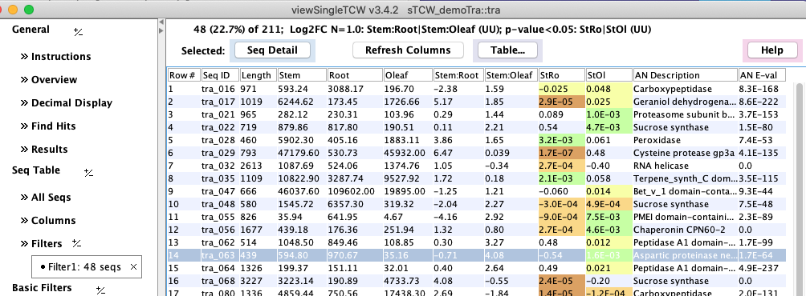

|
viewSingleTCW - View and Query Single Species
Sequence Table
The items under Seq Table produce the main table of sequences.
Selecting All Seqs shows all sequences with whatever columns are set in
Columns.
The table below was produced by filtering for all sequences that
are differentially expressed (p-value<0.05) with log2FC<=1 for stem compared to root or leaf.

The columns can be sorted and moved around.
The decimal number display can be changed with Decimal Display
(the above display uses color scheme #4 for the p-values).
A row can be selected to view the Sequence Detail.
| The Table... allows the options show below.
| The Show Column Stats results in a pop-up window of statistics for all numeric columns,as shown below.
|
|
| 
|
|
Select the Columns label on the left to changed columns.
Click here to see all column sections.
The columns shown on the right are the ones selected for the table shown above.
There are three best hits for each sequence that has annotation:
- Best Bitscore: the one with the best bitscore, and if tied, best E-value.
- Best anno: the best bitscore hit may have a description that is not informative.
TCW tries to find a hit with almost as good of bitscore
but a more informative description. It does this be ignoring hits with descriptions containing
phrases like "uncharacterized protein".
- Best with GO: Hit IDs from UniProt are often assigned GO terms, but not all Hit IDs have GO terms.
This is the hit with the best bitscore that has at least one assigned GO term.
All three groups of Best Hits have the same set of columns available for display.
|
|
|
Select the Filters label to changed columns.
Click here to see all filter sections, which
applies one or more filters to the sequences shown in the Sequence Table.
The following filters were set to obtain the Sequence Table shown about.
The Differential Expression filters allow finding sequences that are up or down regulated
in respect to the selected conditions.
The Best Hits filters allows querying on the three types of best hits described
in Columns above. More extensive queries are provided in Basic Query annoDB Hits,
but this set of filters can be used with other filters on this panel.
|
|
|


{kind=link}
{kind=link}
{kind=link}
{kind=link}
{kind=link}
{kind=link}